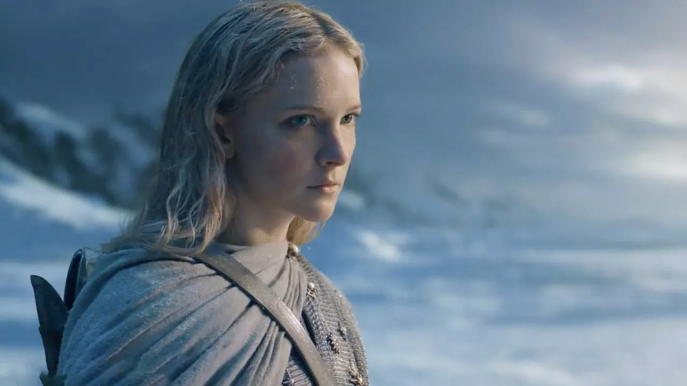
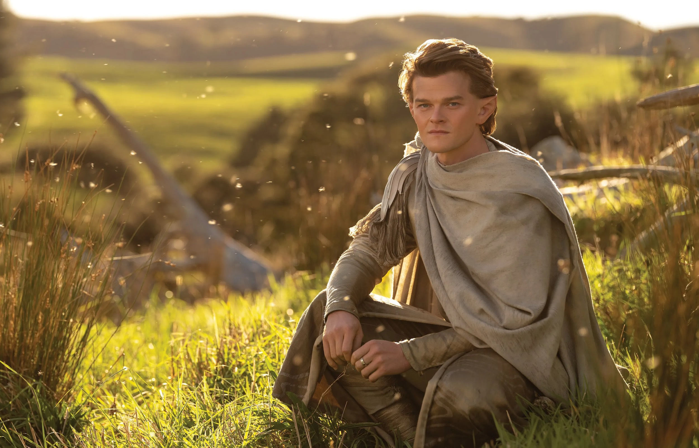
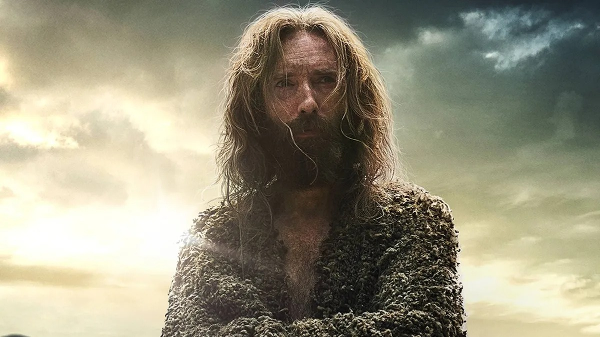
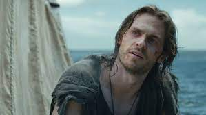
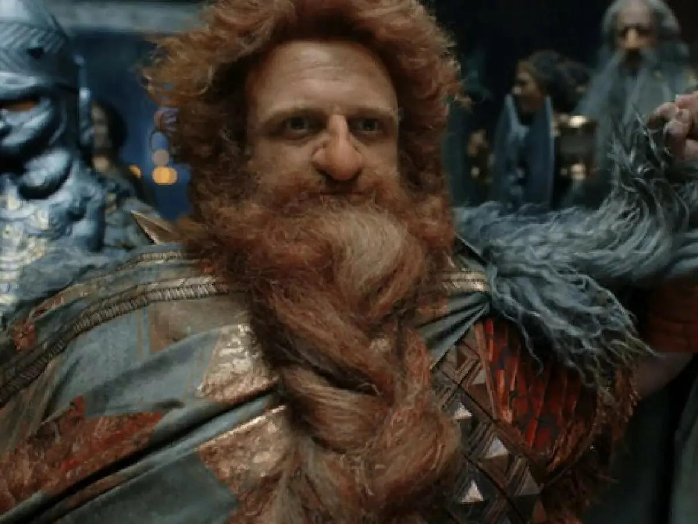
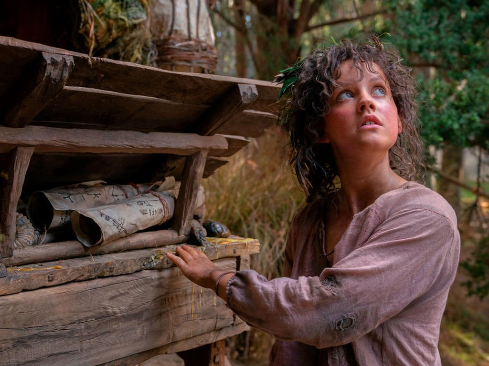

O Senhor dos Anéis:Os Anéis de Poder - Série disponível na Amazon Prime Video
A série "O Senhor dos Anéis:Os Anéis de Poder" já está com sua primeira temporada completa disponível no serviço de streaming da Amazon, o Amazon Prime Vídeo. A série aborda a segunda era da mitologia criada por J.R.R Tolkien, onde diversos acontecimentos resultam no cenário da terra-média visto nos Filmes de O Senhor dos Anéis e O Hobbit. Foi gasto um orçamento de milhões na produção da série, e podemos ver isso na fotografia e no CGI aplicado as cenas. A temporada contém 8 episódios e é uma boa nostalgia para quem deseja retornar a terra-média e desvendar seus mistérios junto com Galadriel, Elrond, Isildur e outros personagens conhecidos pelos fâs da obra.
|  |  |  |
|
Galadriel é a personagem de mais destaque na série, diferente da Galadriel que conhecemos nos filmes, na série, vemos uma Galadriel mais fria e numa busca que parece ser interminável para vingar a morte do seu irmão. |
Elrond támbem recebe muito destaque na série, pois está atuando como um conselheiro do alto-rei Gil-Galad, tendo muita influência nos acontecimentos que envolvem o futuro dos elfos e da terra-media em geral, além de ajudar Galadriel na sua jornada. |
O Estranho é um personagem indiferente, em meio a sinais duvidosos recebidos pelas raças da terra-média, surge esse "Estranho" perto do local onde os Hobbits estão alocados, e só a partir daí, podemos ir tirando conclusões sobre o personagem que parece muito confuso com tudo que está acontecendo a sua volta. |
|  |  |  |
|
|
|
|